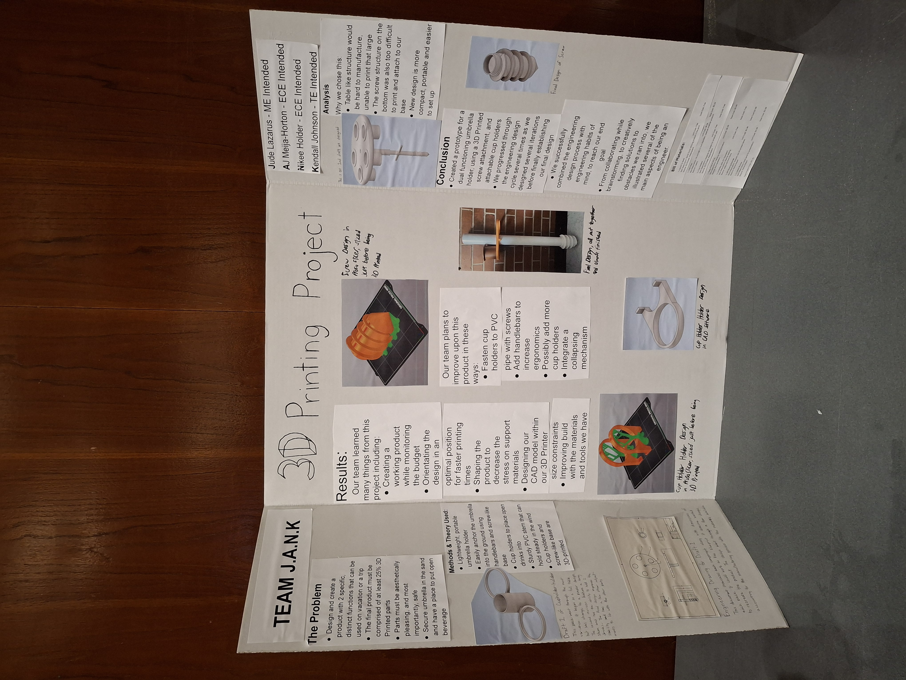
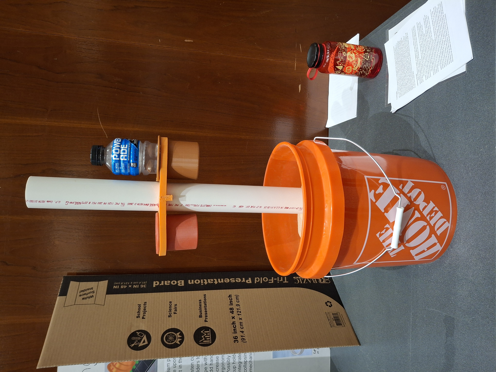

For this project, me and my group members conceptualized a use for our Engineering Grand Challenge, carbon sequestration, in factories and other industrial settings.
By attaching our apparatus to the smokestacks of factories, the idea was that the carbon would be filtered and stored in certain types of rocks at the bottom of the apparatus, and that they could be changed out when needed and used for other things, such as concrete.
This project taught me and my group a lot of foundational skills, such as communication, teamwork, and project-management.




Of all my freshman year projects, this had to be one of my favorites.
I really enjoyed the physical, hands-on nature of this project, as me and my team got to create a physical prototype of our design.
My team was named "Team J.A.N.K" (A funny acronym of me and my team members names, and some what an accurate description of our first prototype), and we were the second 3D Printing group for our class.
As part of our parameters, we were tasked with creating an apparatus that could be used on vacation, and has two functions.
After some brainstorming, we came up with our idea, an umbrella holder that doubles as a cup holder, so that future beach trips might be a little more convinient.
We 3D Printed most of the project, with some of the connectors and the main shaft being made of different materials.
We presented our project at Spring 2025 FEDD competition, where we got to see other projects and meet some engineers in the industry.
Me and my team sharpened our communication, teamwork, and project management skills while learning foundational presentation skills.
We also learned a lot about modeling and 3D Printing processes, which were a blast for me to brush up on.